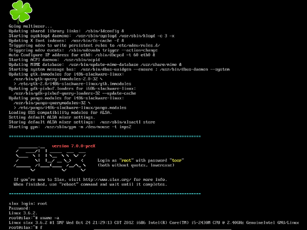

SLAX
Slax Linux
Быстрый, компактный и надёжный Linux дистрибутив Перейти к содержимому
Slax — это livecd операционная система, базирующаяся на Slackware Linux. Live, в данном случе, означает, что эта система может запускаться с внешнего носителя без необходимости установки куда-либо.
Модульная структура — это, несомненно, огромнейший плюс системы. Во-первых, данный подход не требует углублённых знаний линукса (установка пакетов проходит за 2-3 клика мышью), а во-вторых, «модульный» подход позволяет любому пользователю собрать систему под свои, конкретные нужды.
Slax одинаково хорошо загружается и с запоминающих USB устройств, например с flash карты, и с жёсткого диска или CD\DVD диска. Просто подключите свое устройство (вставьте диск в привод) и загрузите операционную систему с него. После загрузки она сразу же будет готова к работе.
Основным рабочим окружением в slax является KDE4. Среда уже сконфигурирована для большинства общих задач — инструменты для восстановления данных, приложения для работы с сетью и всопроизведения мельтимедиа, софт для работы в интернете и обмена мгновенными сообщениями — это лишь малая часть того что будет доступно пользователю сразу после загрузки системы.
Благодаря поддержке технологии zRAM, в текстовом режиме slax можно запустить на компьютерах, которые имеют всего 48mb RAM. В качестве файловой системы, для работы slax’a, вы можете использовать EXT (ext2,ext3,ext4), btrfs, и даже FAT или NTFS.

Slax — бесплатное программное обеспечение: Вы можете распространить и/или изменить его в соответствии с универсальной общедоступной лицензией GNU, опубликованной Фондом свободного программного обеспечения. Slax распространен в надежде, что это будет полезно, но без какой-то гарантии, так что используйте на свой собственный риск. GNU лицензия требует, чтобы все исходные коды были опубликованы, чтобы другие могли бы снова использовать их, изменять или изучать. Поверьте, это очень хорошая идея — без нее, slax никогда бы не появился на свет. Исходный код Slax доступен для скачивания. Кроме того, сам исходный код Slax схож с Slackware, исходный код которого также общедоступен.
Запись опубликована 19.10.2013 в рубрике Разное устаревшее.
Навигация по записям ← Загрузка и установка. Slax на HDD, USB. Slax 7.0.9 Beta →
Загрузка и установка. Slax на HDD, USB.
Slax доступен для пользователя в двух вариантах:
Если Вы планируете запускать Slax на CD или DVD диске, вам нужно скачать ISO образ системы. Важно понимать, что записать полученный файл нужно именно как образ диска. В Windows 7, например, просто щелкните правой кнопкой мыши по файлу ISO и выберите «Записать образ диска» из контекстного меню. На более старой ОС Windows вам потребуется стороннее программное обеспечение для этой задачи, например, вы можете попробовать Free ISO Burner.
После этого поместите диск Slax в CD/DVD привод и перезагрузите компьютер. Возможно, нужно будет нажать какую-то клавишу, чтобы отобразить меню загрузки во время запуска вашего компьютера, и выбрать пункт загрузки с диска.
Slax на USB устройстве или жестком диске.
Что бы запустить slax на USB устройстве или HDD, вы должны скачать ZIP-архив c системой. Распакуйте архив прямо в корневую директорию Вашего устройства, где после распаковки будет создана папка /slax/. Далее, перейдите в /slax/boot/ и найдите там bootinst.bat файл. Для установки slax на жёсткий диск или flash карту прсто запустите найденный файл, дважды щелкнув по нему, это внесет все необходимые изменения в MBR вашего устройства и сделает его загрузочным.
Далее следуйте тем же действиям как при загрузке через CD – перезагрузите компьютер и в меню загрузки выберите пункт запуска системы с USB или жёсткого диска. Запись опубликована 19.10.2013 в рубрике Документация Slax 7.